library(bsts) # load the bsts package
data(iclaims) # bring the initial.claims data into scope
plot(initial.claims$iclaimsNSA, lwd=2, ylab="Unemployment claims (thousand)")
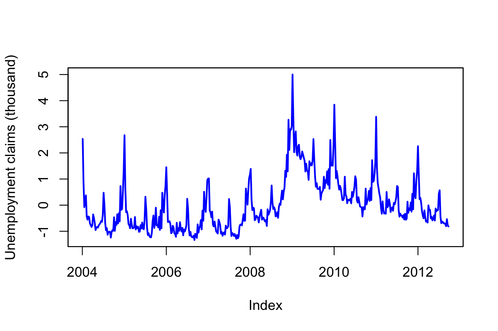
Time series data are everywhere, but time series modeling is a fairly specialized area within statistics and data science. This chapter describes the bsts software package, which makes it easy to fit some fairly sophisticated time series models with just a few lines of R code.
The BSTS (Bayesian Structural Time Series) section of this chapter is adapted from the excellent blog post by Steven Scott: “Fitting Bayesian structural time series with the bsts R package”. We thank Steven for making this material available and for his contributions to the time series community.
Time series data are encountered across a wide range of fields, including business, the sciences, healthcare, and engineering. While forecasting future values (such as predicting next month’s sales) is a common application, time series analysis is also used to understand the factors that influence these values. Recently, time series forecasting has gained increased attention in the technology sector, with tools like Facebook’s “Prophet” (Sean J. Taylor and Ben Letham (2017)) and Google’s forecasting system (Eric Tassone and Farzan Rohani (2017)) being highlighted in various tech blogs.
In this chapter, we introduce the bsts package for R, which provides a framework for fitting Bayesian structural time series models. These models, also referred to as “state space models,” “structural time series,” “Kalman filter models,” or “dynamic linear models,” are highly flexible and can be approached from both Bayesian and non-Bayesian perspectives. The bsts package, however, is specifically designed to leverage Bayesian posterior sampling.
As an open-source package available on CRAN (installable via install.packages("bsts")), bsts shares some similarities with the forecasting systems developed by Facebook and Google, but it was created with different objectives. Whereas the Facebook and Google tools are optimized for large-scale, automated forecasting—particularly for daily data and across many time series—bsts is intended to be more customizable. The focus of those large-scale systems is on automating analysis to handle many series efficiently, often by using techniques like regularized regression (Facebook) or ensemble averaging (Google), and by carefully accounting for holidays.
While bsts can be set up for automated forecasting and is even used as part of Google’s ensemble approach, it is also well-suited for analysts who want to tailor models to specific needs. This includes decisions about forecasting horizons, handling of seasonality, and whether the primary goal is prediction or explanation.
The foundation of bsts is the structural time series model, which will be outlined in the next section. The chapter then proceeds with several detailed examples that showcase advanced features of the package. The first example, Nowcasting, covers local linear trend and seasonal models, as well as spike-and-slab priors for high-dimensional regression. The second example, Long-term forecasting, addresses cases where standard local level or trend models are insufficient and introduces the semilocal linear trend model. The third example, Recession modeling, demonstrates how to handle non-Gaussian response variables and focuses on controlling for serial dependence in explanatory modeling. The chapter concludes with a brief overview of additional features in bsts that are not covered in depth.
A structural time series model is defined by two equations. The observation equation relates the observed data \(y_t\) to a vector of latent variables \(\alpha_t\) known as the “state.” \[ y_t = Z_t^T\alpha_t + \epsilon_t. \]
The transition equation describes how the latent state evolves through time. \[ \alpha_{t+1} = T_t \alpha_t + R_t \eta_t. \]
The error terms \(\epsilon_t\) and \(\eta_t\) are Gaussian and independent of everything else. The arrays \(Z_t\), \(T_t\) and \(R_t\) are structural parameters. They may contain parameters in the statistical sense, but often they simply contain strategically placed 0’s and 1’s indicating which bits of \(\alpha_t\) are relevant for a particular computation. An example will hopefully make things clearer.
The simplest useful model is the “local level model,” in which the vector \(\alpha_t\) is just a scalar \(\mu_t\). The local level model is a random walk observed in noise. \[\begin{align*} y_t = &\mu_t + \epsilon_t\\ \mu_{t+1} = &\mu_t + \eta_t. \end{align*}\] Here \(\alpha_t=\mu_t\), and \(Z_t\), \(T_t\), and \(R_t\) all collapse to the scalar value 1. Similar to Bayesian hierarchical models for nested data, the local level model is a compromise between two extremes. The compromise is determined by variances of \(\epsilon_t \sim N(0,\sigma^2)\) and \(\eta_t \sim N(0,\tau^2)\). If \(\tau^2=0\) then \(\mu_t\) is a constant, so the data are IID Gaussian noise. In that case the best estimator of \(y_{t+1}\) is the mean of \(y_1,\ldots,y_t\). Conversely, if \(\sigma^2=0\) then the data follow a random walk, in which case the best estimator of \(y_{t+1}\) is \(y_t\). Notice that in one case the estimator depends on all past data (weighted equally) while in the other it depends only on the most recent data point, giving past data zero weight. If both variances are positive then the optimal estimator of \(y_{t+1}\) winds up being “exponential smoothing,” where past data are forgotten at an exponential rate determined by the ratio of the two variances. Also notice that while the state in this model is Markov (i.e. it only depends on the previous state), the dependence among the observed data extends to the beginning of the series.
In the example above, one of the plots shows the price of Apple stock from 2021-01-01 to 2022-12-31. The other plot is a sequence generated from a random walk model fitted to the Apple price data. Can you spot which one is which?
Structural time series models are useful because they are flexible and modular. The analyst chooses the structure of \(\alpha_t\) based on things like whether short- or long-term predictions are more important, whether the data contains seasonal effects, and whether and how regressors are to be included. Many of these models are standard, and can be fit using a variety of tools, such as the StructTS function distributed with base R or one of several R packages for fitting these models (with the dlm package (Petris (2010), Campagnoli, Petrone, and Petris (2009)) deserving special mention). The bsts package handles all the standard cases, but it also includes several useful extensions, described in the next few sections through a series of examples. Each example includes a mathematical description of the model and example bsts code showing how to work with the model using the bsts software. To keep things short, details about prior assumptions are largely avoided.
Example 15.1 (Nowcasting) S. Scott and Varian (2014) and Steven L. Scott and Varian (2015) used structural time series models to show how Google search data can be used to improve short-term forecasts (“nowcasts”) of economic time series. The figure below shows the motivating data set from S. Scott and Varian (2014), which is also included with the bsts package. The data consist of the weekly initial claims for unemployment insurance in the US, as reported by the US Federal Reserve. Like many official statistics, they are released with delay and subject to revision. At the end of the week, the economic activity determining these numbers has taken place, but the official numbers are not published until several days later. For economic decisions based on these and similar numbers, it would help to have an early forecast of the current week’s number as of the close of the week. Thus the output of this analysis is truly a “nowcast” of data that has already happened rather than a “forecast” of data that will happen in the future.
library(bsts) # load the bsts package
data(iclaims) # bring the initial.claims data into scope
plot(initial.claims$iclaimsNSA, lwd=2, ylab="Unemployment claims (thousand)")There are two sources of information about the current value \(y_t\) in the initial claims series: past values \(y_{t-\tau}\) describing the time series behavior of the series, and contemporaneous predictors \(x_t\) from a data source which is correlated with \(y_t\), but which is available without the delay exhibited by \(y_t\). The time series structure shows an obvious trend (in which the financial and housing crises in 2008 - 2009 are apparent) as well as a strong annual seasonal pattern. The external data source explored by Scott and Varian was search data from Google trends with search queries such as “how to file for unemployment” having obvious relevance.
Scott and Varian modeled the data using a structural time series with three state components:
The model is \[\begin{align*} y_t = & \mu_t + \tau_t + \beta^T x_t + \epsilon_t\\ \mu_{t+1} = &\mu_t + \delta_t + \eta_{0t}\\ \delta_{t+1} = &\delta_t + \eta_{1t}\\ \tau_{t+1} = &-\sum_{s = 1}^{S-1}\tau_{t} + \eta_{2t}. \end{align*}\]
The trend component looks similar to the local level model above, but it has an extra term \(\delta_t\). Notice that \(\delta_t\) is the amount of extra \(\mu\) you can expect as \(t\rightarrow t+1\), so it can be interpreted as the slope of the local linear trend. Slopes normally multiply some \(x\) variable, but in this case \(x=\Delta t\), which is omitted from the equation because it is always 1. The slope evolves according to a random walk, which makes the trend an integrated random walk with an extra drift term. The local linear trend is a better model than the local level model if you think the time series is trending in a particular direction and you want future forecasts to reflect a continued increase (or decrease) seen in recent observations. Whereas the local level model bases forecasts around the average value of recent observations, the local linear trend model adds in recent upward or downward slopes as well. As with most statistical models, the extra flexibility comes at the price of extra volatility.
The best way to understand the seasonal component \(\tau_t\) is in terms of a regression with seasonal dummy variables. Suppose you had quarterly data, so that \(S=4\). You might include the annual seasonal cycle using 3 dummy variables, with one left out as a baseline. Alternatively, you could include all four dummy variables but constrain their coefficients to sum to zero. The seasonal state model takes the latter approach, but the constraint is that the \(S\) most recent seasonal effects must sum to zero in expectation. This allows the seasonal pattern to slowly evolve. Scott and Varian described the annual cycle in the weekly initial claims data using a seasonal state component with \(S=52\). Of course weeks don’t neatly divide years, but given the small number of years for which Google data are available the occasional one-period seasonal discontinuity was deemed unimportant.
Let’s ignore the regression component for now and fit a bsts model with just the trend and seasonal components.
ss <- AddLocalLinearTrend(list(), initial.claims$iclaimsNSA)
ss <- AddSeasonal(ss, initial.claims$iclaimsNSA, nseasons = 52)
model1 <- bsts(initial.claims$iclaimsNSA,state.specification = ss,niter = 1000)The first thing to do when fitting a bsts model is to specify the contents of the latent state vector \(\alpha_t\). The bsts package offers a library of state models, which are included by adding them to a state specification (which is just a list with a particular format). The call to AddLocalLinearTrend above adds a local linear trend state component to an empty state specification (the list() in its first argument). The call to AddSeasonal adds a seasonal state component with 52 seasons to the state specification created on the previous line. The state vector \(\alpha_t\) is formed by concatenating the state from each state model. Similarly, the vector \(Z_t\) is formed by concatenating the \(Z\) vectors from the two state models, while the matrices \(T_t\) and \(R_t\) are combined in block-diagonal fashion.
The state specification is passed as an argument to bsts, along with the data and the desired number of MCMC iterations. The model is fit using an MCMC algorithm, which in this example takes about 20 seconds to produce 1000 MCMC iterations. The returned object is a list (with class attribute bsts). You can see its contents by typing
names(model1) "sigma.obs" "sigma.trend.level"
"sigma.trend.slope" "sigma.seasonal.52"
"final.state" "state.contributions"
"one.step.prediction.errors" "log.likelihood"
"has.regression" "state.specification"
"prior" "timestamp.info"
"model.options" "family"
"niter" "original.series" The first few elements contain the MCMC draws of the model parameters. Most of the other elements are data structures needed by various S3 methods (plot, print, predict, etc.) that can be used with the returned object. MCMC output is stored in vectors (for scalar parameters) or arrays (for vector or matrix parameters) where the first index in the array corresponds to MCMC iteration number, and the remaining indices correspond to dimension of the deviate being drawn.
Most users won’t need to look inside the returned bsts object because standard tasks like plotting and prediction are available through familiar S3 methods. For example, there are several plot methods available.
par(mar=c(4,4,2,0))
plot(model1)
plot(model1, "components")The Figure 15.4 (a) above shows the posterior distribution of model state. Blue circles are actual data points. The Figure 15.4 (b) shows the individual state components. The plot looks fuzzy because it is showing the marginal posterior distribution at each time point.
The default plot method plots the posterior distribution of the conditional mean \(Z_t^T\alpha_t\) given the full data \(y=y_1,\ldots,y_T\). Other plot methods can be accessed by passing a string to the plot function. For example, to see the contributions of the individual state components, pass the string “components” as a second argument, as shown above. The figure below shows the output of these two plotting functions. You can get a list of all available plots by passing the string help as the second argument.
To predict future values there is a predict method. For example, to predict the next 12 time points you would use the following commands.
par(mar=c(4,4,0,0))
pred1 <- predict(model1, horizon = 12)
plot(pred1, plot.original = 156)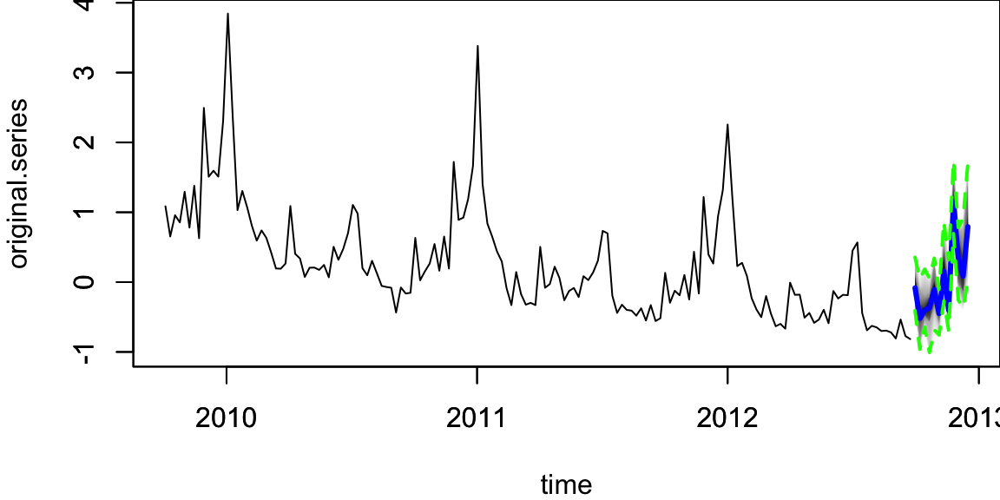
The output of predict is an object of class bsts.prediction, which has its own plot method. The plot.original = 156 argument says to plot the prediction along with the last 156 time points (3 years) of the original series.
Now let’s add a regression component to the model described above, so that we can use Google search data to improve the forecast. The bsts package only includes 10 search terms with the initial claims data set, to keep the package size small, but S. Scott and Varian (2014) considered examples with several hundred predictor variables. When faced with large numbers of potential predictors it is important to have a prior distribution that induces sparsity. A spike and slab prior is a natural way to express a prior belief that most of the regression coefficients are exactly zero.
A spike and slab prior is a prior on a set of regression coefficients that assigns each coefficient a positive probability of being zero. Upon observing data, Bayes’ theorem updates the inclusion probability of each coefficient. When sampling from the posterior distribution of a regression model under a spike and slab prior, many of the simulated regression coefficients will be exactly zero. This is unlike the “lasso” prior (the Laplace, or double-exponential distribution), which yields MAP estimates at zero but where posterior simulations will be all nonzero. You can read about the mathematical details of spike and slab priors in S. Scott and Varian (2014).
When fitting bsts models that contain a regression component, extra arguments captured by ... are passed to the SpikeSlabPrior function from the BoomSpikeSlab package. This allows the analyst to adjust the default prior settings for the regression component from the bsts function call. To include a regression component in a bsts model, simply pass a model formula as the first argument.
# Fit a `bsts` model with expected model size 1, the default.
model2 <- bsts(iclaimsNSA ~ .,state.specification = ss,niter = 1000,data = initial.claims)
# Fit a `bsts` model with expected model size 5, to include more coefficients.
model3 <- bsts(iclaimsNSA ~ .,state.specification = ss,niter = 1000,data = initial.claims,expected.model.size = 5) # Passed to SpikeSlabPrior.To examine the output you can use the same plotting functions as before. For example, to see the contribution of each state component you can type
par(mar=c(4,4,3,0))
plot(model2, "comp")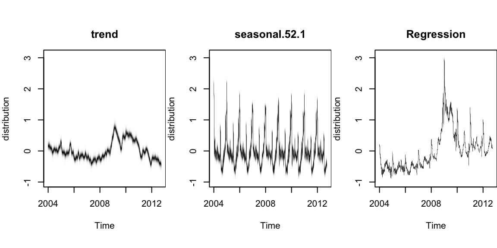
It produces the contribution of each state component to the initial claims data, assuming a regression component with default prior. Compare to the previous model. The regression component is explaining a substantial amount of variation in the initial claims series.
There are also plotting functions that you can use to visualize the regression coefficients. The following commands plot posterior inclusion probabilities for predictors in the “initial claims” nowcasting example assuming an expected model size of 1 and 5.
par(mar=c(4,0,0,0))
plot(model2, "coef")
plot(model3, "coef")The search term “unemployment office” shows up with high probability in both models. Increasing the expected model size from 1 (the default) to 5 allows other variables into the model, though “Idaho unemployment” is the only one that shows up with high probability.
Those probabilities are calculated from the histogram of the samples of each \(\beta\) calculated by the estimation algorithm (MCMC)
par(mar=c(4,4,0,0))
# unemployment.office
hist(model3$coefficients[,10], breaks = 40, main="",xlab="unemployment.office", col="lightblue")
# pennsylvania.unemployment
hist(model3$coefficients[,3], breaks = 40, main = "", xlab="pennsylvania.unemployment", col="lightblue")
hist(model2$coefficients[,3], breaks = 40, main = "", xlab="pennsylvania.unemployment", col="lightblue")As part of the model fitting process, the algorithm generates the one-step-ahead prediction errors \(y_t - E(y_t | Y_{t-1}, \theta)\), where \(Y_{t-1}=y_1,\ldots,y_{t-1}\), and the vector of model parameters \(\theta\) is fixed at its current value in the MCMC algorithm. The one-step-ahead prediction errors can be obtained from the bsts model by calling bsts.prediction.errors(model1).
The one step prediction errors are a useful diagnostic for comparing several bsts models that have been fit to the same data. They are used to implement the function CompareBstsModels, which is called as shown below.
CompareBstsModels(list("Model 1" = model1,
"Model 2" = model2,
"Model 3" = model3),
colors = c("black", "red", "blue"))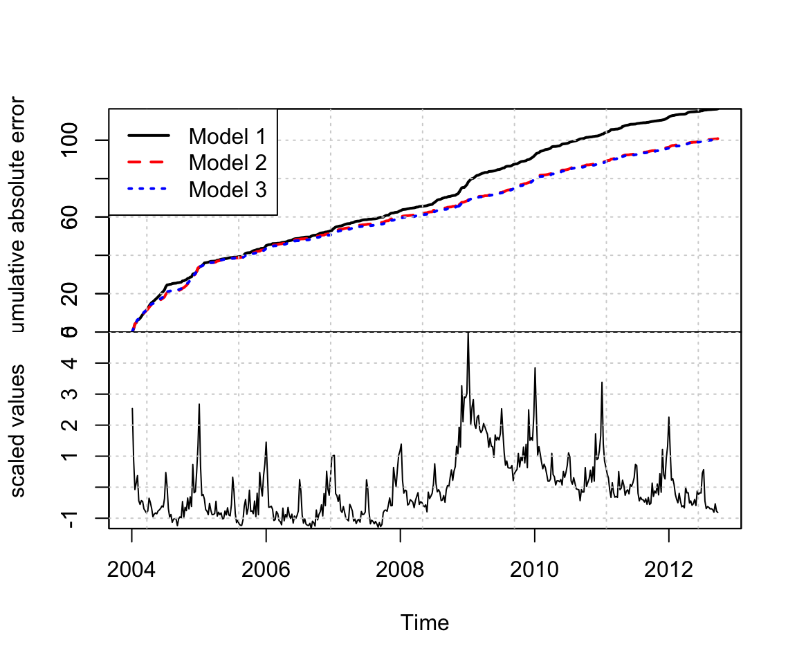
The bottom panel shows the original series. The top panel shows the cumulative total of the mean absolute one step prediction errors for each model. The final time point in the top plot is proportional to the mean absolute prediction error for each model, but plotting the errors as a cumulative total lets you see particular spots where each model encountered trouble, rather than just giving a single number describing each model’s predictive accuracy. This figure shows that the Google data help explain the large spike near 2009, where model 1 accumulates errors at an accelerated rate, but models 2 and 3 continue accumulating errors at about the same rate they had been before. The fact that the lines for models 2 and 3 overlap in this figure means that the additional predictors allowed by the relaxed prior used to fit model 3 do not yield additional predictive accuracy.
Example 15.2 (Long-term forecasting) A common question about bsts is “which trend model should I use?” To answer that question it helps to know a bit about the different models that the bsts software package provides, and what each model implies. In the local level model, the state evolves according to a random walk: \[
\mu_{t+1}=\mu_t+\eta_t.
\] If you place your eye at time 0 and ask what happens at time \(t\), you find that \(\mu_t \sim N(\mu_0,t\sigma^2_\eta)\). The variance continues to grow with \(t\), all the way to \(t=\infty\). The local linear trend is even more volatile. When forecasting far into the future, the flexibility provided by these models becomes a double-edged sword, as local flexibility in the near term translates into extreme variance in the long term.
An alternative is to replace the random walk with a stationary AR process. For example \[ \mu_{t+1}=\rho\mu_t+\eta_t, \]
with \(\eta_t \sim N(0,\sigma^2_{\eta})\) and \(|\rho|<1\). This model has stationary distribution \[
\mu_{\infty} \sim N\left(0,\frac{\sigma^2_{\eta}}{1-\rho^2}\right),
\] which means that uncertainty grows to a finite asymptote, rather than infinity, in the distant future. The bsts package offers autoregressive state models through the functions AddAr, when you want to specify a certain number of lags, and AddAutoAr when you want the software to choose the important lags for you.
A hybrid model modifies the local linear trend model by replacing the random walk on the slope with a stationary AR(1) process, while keeping the random walk for the level of the process. The bsts package refers to this is the “semilocal linear trend” model. \[\begin{align*}
\mu_{t+1}=& \mu_t+\delta_t+\eta_{0t}\\
\delta_{t+1}=& D+\rho(\delta_t-D)+\eta_{1t}
\end{align*}\] The \(D\) parameter is the long-run slope of the trend component, to which \(\delta_t\) will eventually revert. However, \(\delta_t\) can have short-term autoregressive deviations from the long-term trend, with memory determined by \(\rho\). Values of \(\rho\) close to 1 will lead to long deviations from \(D\). To see the impact this can have on long-term forecasts, consider the time series of daily closing values for the S&P 500 stock market index over the last 5 years, shown below.
GSPC = read.csv("../data/GSPC.csv")
GSPC = xts(GSPC, order.by = as.Date(rownames(GSPC), "%Y-%m-%d"))
knitr::kable(head(GSPC))
plot(GSPC$GSPC.Adjusted, main="")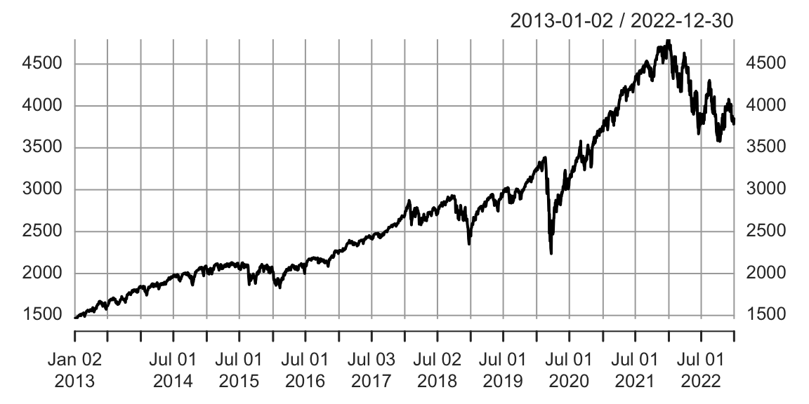
Consider two forecasts of the daily values of this series for the next 360 days. The first assumes the local linear trend model. The second assumes the semilocal linear trend.
sp500 = GSPC$GSPC.Adjusted
ss1 <- AddLocalLinearTrend(list(), sp500)
model1 <- bsts(sp500, state.specification = ss1, niter = 1000)
ss2 <- AddSemilocalLinearTrend(list(), sp500)
model2 <- bsts(sp500, state.specification = ss2, niter = 1000)The figure below shows long-term forecasts of the S&P 500 closing values under the (left) local linear trend and (right) semilocal linear trend state models.
load("../data/timeseries/model12-sp500.RData")
par(mar=c(4,4,0,1))
pred1 <- predict(model1, horizon = 360)
pred2 <- predict(model2, horizon = 360)
plot(pred2, plot.original = 360, ylim = range(pred1))
plot(pred1, plot.original = 360, ylim = range(pred1))
Not only are the forecast expectations from the two models different, but the forecast errors from the local linear trend model are implausibly wide, including a small but nonzero probability that the S&P 500 index could close near zero in the next 360 days. The error bars from the semilocal linear trend model are far more plausible, and more closely match the uncertainty observed over the life of the series thus far.
Example 15.3 (Recession modeling using non-Gaussian data) Although we have largely skipped details about how the bsts software fits models, the Gaussian error assumptions in the observation and transition equations are important for the model fitting process. Part of that process involves running data through the Kalman filter, which assumes Gaussian errors in both the state and transition equations. In many settings where Gaussian errors are obviously inappropriate, such as for binary or small count data, one can introduce latent variables that give the model a conditionally Gaussian representation. Well known “data augmentation” methods exist for probit regression (Albert (1993)) and models with student-T errors (Rubin (2015)). Somewhat more complex methods exist for logistic regression (Frühwirth-Schnatter and Frühwirth (2007), Held and Holmes (2006), Gramacy and Polson (2012)) and Poisson regression (Frühwirth-Schnatter et al. (2008)). Additional methods exist for quantile regression (Benoit and Van den Poel (2012)), support vector machines (Polson and Scott (2011)), and multinomial logit regression (Frühwirth-Schnatter and Frühwirth (2010)). These are not currently provided by the bsts package, but they might be added in the future.
To see how non-Gaussian errors can be useful, consider the analysis done by Berge, Sinha, and Smolyansky (2016), who used Bayesian model averaging (BMA) to investigate which of several economic indicators would best predict the presence or absence of a recession. We will focus on their nowcasting example, which models the probability of a recession at the same time point as the predictor variables. Berge, Sinha, and Smolyansky (2016) also analyzed the data with the predictors at several lags.
The model used in Berge, Sinha, and Smolyansky (2016) was a probit regression, with Bayesian model averaging used to determine which predictors should be included. The response variable was the presence or absence of a recession (as determined by NBER).
dat <- read.csv("../data/timeseries/rec_data_20160613.csv")
rec = ts(dat$nber, start=c(1973, 1), end=c(2016, 5), frequency=12)
plot(rec, type='l', col='blue', ylab="Recession")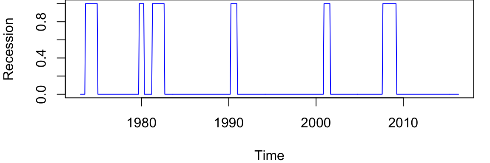
The BMA done by Berge, Sinha, and Smolyansky (2016) is essentially the same as fitting a logistic regression under a spike-and-slab prior with the prior inclusion probability of each predictor set to 1/2. That analysis can be run using the BoomSpikeSlab R package (Steven L. Scott (2022)), which is similar to bsts, but with only a regression component and no time series.
The logistic regression model is highly predictive, but it ignores serial dependence in the data. To capture serial dependence, consider the following dynamic logistic regression model with a local level trend model. \[\begin{align*} \mathrm{logit}(p_t)= & \mu_t+\beta^Tx_t\\ \mu_{t+1}= & \mu_t+\eta_t \end{align*}\] Here \(p_t\) is the probability of a recession at time \(t\) ,and \(x_t\) is the set of economic indicators used by Berge, Sinha, and Smolyansky (2016) in their analysis. The variables are listed in the table below
| Variable | Definition/notes | Transformation |
|---|---|---|
| Financial Variables | ||
| Slope of yield curve | 10-year Treasury less 3-month yield | |
| Curvature of yield curve | 2 x 2-year minus 3-month and 10-year | |
| GZ index | Gilchrist and Zakrajsek (AER, 2012) | |
| TED spread | 3-month ED less 3-month Treasury yield | |
| BBB corporate spread | BBB less 10-year Treasury yield | |
| S 500, 1-month return | 1-month log diff. | |
| S 500, 3-month return | 3-month log diff. | |
| Trade-weighted dollar | 3-month log diff. | |
| VIX | CBOE and extended following Bloom | |
| Macroeconomic Indicators | ||
| Real personal consumption expend. | 3-month log diff. | |
| Real disposable personal income | 3-month log diff. | |
| Industrial production | 3-month log diff. | |
| Housing permits | 3-month log diff. | |
| Nonfarm payroll employment | 3-month log diff. | |
| Initial claims | 4-week moving average | 3-month log diff. |
| Weekly hours, manufacturing | 3-month log diff. | |
| Purchasing managers index | 3-month log dif |
First, we prepare the data by shifting it by \(h\), which is the forecast horizon.
h=0
# predict h months ahead
y.h <- dat$nber[-(1:h)]
hh <- length(dat$nber) - h
dat.h <- dat[1:hh,-1]
# h=0 is a special case
if(h==0) y.h <- dat$nber
if(h==0) dat.h <- dat[,-1]To fit this model, we can issue the commands shown below.
# Because 'y' is 0/1 and the state is on the logit scale the default prior
# assumed by AddLocalLevel won't work here, so we need to explicitly set the
# priors for the variance of the state innovation errors and the initial value
# of the state at time 0. The 'SdPrior' and 'NormalPrior' functions used to
# define these priors are part of the Boom package. See R help for
# documentation. Note the truncated support for the standard deviation of the
# random walk increments in the local level model.
# A more complex model
ss <- AddLocalLevel(list(),y.h,
sigma.prior = SdPrior(sigma.guess = .1,
sample.size = 1,
upper.limit = 1),
initial.state.prior = NormalPrior(0, 5))
# Tell bsts that the observation equation should be a logistic regression by
# passing the 'family = "logit"' argument.
ts.model <- bsts(y.h ~ ., ss, data = dat.h, niter = 20000,family = "logit", expected.model.size = 10)Now let’s plot the results
par(mar=c(4,4,0,0))
plot(ts.model,"coef")
plot(ts.model)
lines(y.h, lwd=3,col="blue")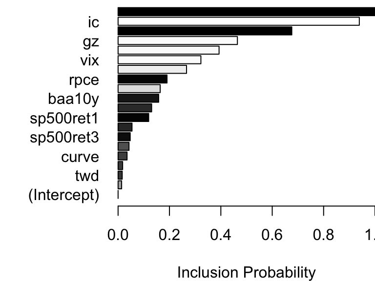
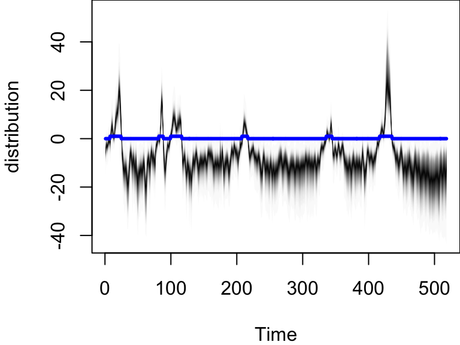
plot(ts.model,"predictors")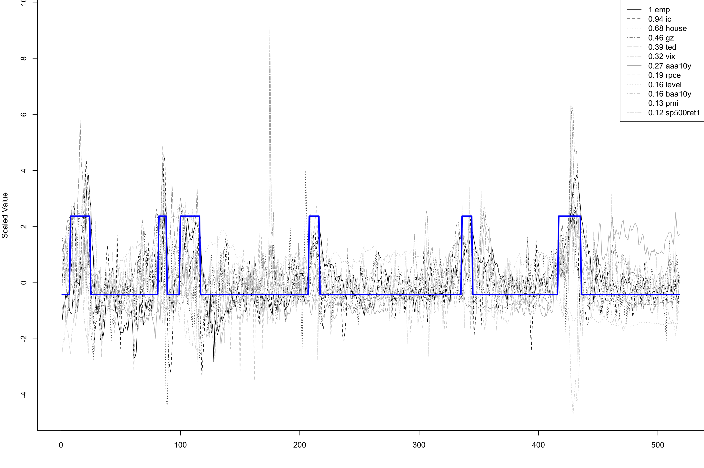
Notice that the distribution of \(p_t\) is moving to very large values during a recession, and to very small values outside of a recession. This effect captures the strong serial dependence in the recession data. Recessions are rare, but once they occur they tend to persist. Assuming independent time points is therefore unrealistic, and it substantially overstates the amount of information available to identify logistic regression coefficients.
The preceding examples have shown that the bsts software package can handle several nonstandard, but useful, time series applications. These include the ability to handle large numbers of contemporaneous predictors with spike and slab priors, the presence of trend models suitable for long term forecasting, and the ability to handle non-Gaussian data. We have run out of space, but bsts can do much more.
For starters there are other state models you can use. Bsts has elementary support for holidays. It knows about 18 US holidays, and has capacity to add more, including holidays that occur on the same date each year, holidays that occur on a fixed weekday of a fixed month (e.g. 3rd Tuesday in February, or last Monday in November). The model for each holiday is a simple random walk, but look for future versions to have improved holiday support via Bayesian shrinkage.
Bsts offers support for multiple seasonalities. For example, if you have several weeks of hourly data then you will have an hour-of-day effect as well as a day-of-week effect. You can model these using a single seasonal effect with 168 seasons (which would allow for different hourly effects on weekends and weekdays), or you can assume additive seasonal patterns using the season.duration argument to AddSeasonal,
ss <- AddSeasonal(ss, y, nseasons = 24)
ss <- AddSeasonal(ss, y, nseasons = 7, season.duration = 24)The latter specifies that each daily effect should remain constant for 24 hours. For modeling physical phenomena, bsts also offers trigonometric seasonal effects, which are sine and cosine waves with time varying coefficients. You obtain these by calling AddTrig. Time varying effects are available for arbitrary regressions with small numbers of predictor variables through a call to AddDynamicRegression.
In addition to the trend models discussed so far, the function AddStudentLocalLinearTrend gives a version of the local linear trend model that assumes student-t errors instead of Gaussian errors. This is a useful state model for short term predictions when the mean of the time series exhibits occasional dramatic jumps. Student-t errors can be introduced into the observation equation by passing the family = "student" argument to the bsts function call. Allowing for heavy tailed errors in the observation equation makes the model robust against individual outliers, while heavy tails in the state model provides robustness against sudden persistent shifts in level or slope. This can lead to tighter prediction limits than Gaussian models when modeling data that have been polluted by outliers. The observation equation can also be set to a Poisson model for small count data if desired.
Finally, the most recent update to bsts supports data with multiple observations at each time stamp. The Gaussian version of the model is \[\begin{align*}
y_{it} = &\beta^T x_{it} + Z_t^T\alpha_t + \epsilon_{it}\\
\alpha_{t+1} = & T_t \alpha_t + R_t \eta_t,
\end{align*}\] which is best understood as a regression model with a time varying intercept.
The classic filtering and prediction algorithms for linear and Gaussian systems are described in Rudolph Emil Kalman (1960) and R. E. Kalman and Bucy (1961). Early work on discrete recursions for hidden Markov models are in Baum et al. (1970) who use an EM-type algorithm, Viterbi (1967) who provides a modal state filter estimate and recursions developed in Lindgren (1978). While these can be used to evaluate the marginal likelihood for the parameters they are computationally too intensive to solve the filtering and learning, Lindgren (1978). Steven L. Scott (2002) provides a review of FFBS algorithms for discrete HMMs.
Markov chain Monte Carlo (MCMC) algorithms for parameter learning in nonlinear non-Gaussian state space models were developed by Carlin, Polson, and Stoffer (1992). For linear and Gaussian systems, Carter and Kohn (1994) introduced the filter forward and backwards sample (FFBS) algorithm, which efficiently draws the entire block of hidden states. For handling multinomial logit models, Steven L. Scott (2002) and Frühwirth-Schnatter et al. (2008) developed mixture of normals approximation methods. Additionally, West and Harrison (1997) proposed conditionally conjugate priors that allow parameters to be marginalized out of the updating equations, leading to more efficient inference procedures.
The Normal/ Normal Bayesian learning model provides the basis for shrinkage estimation of multiple means and the basis of the Kalman filter for dynamically tracking a path of an object.
The Kalman filter is arguably the most common application of Bayesian inference. The Kalman filter assumes a linear and Gaussian state-space model: \[ y_{t}=x_{t}+\sigma\varepsilon_{t}^{y}\text{ and }x_{t}=x_{t-1}+\sigma _{x}\varepsilon_{t}^{x}, \] where \(\varepsilon_{t}^{y}\) and \(\varepsilon_{t}^{x}\) are i.i.d. standard normal and \(\sigma\) and \(\sigma_{x}\) are known. The observation equation posits that the observed data, \(y_{t}\), consists of the random-walk latent state, \(x_{t}\), that is polluted by noise, \(\sigma\varepsilon_{t}^{y}\). Further, \(\sigma_{x}/\sigma\) is the “signal-to-noise” ratio, measures the information content of the signal. As \(\sigma\) increases relatively to \(\sigma_{x}\), the observations become noisier and less informative. The model is initialized via a prior distribution over \(x_{0}\), which is for analytical tractability must be normally distributed, \(x_{0}\sim\mathcal{N}\left( \mu_{0},\sigma_{0}^{2}\right)\).
The posterior distribution solves the filtering problem and is defined recursively via Bayes rule: \[ p\left( x_{t+1} \mid y^{t+1}\right) =\frac{p\left( y_{t+1} \mid x_{t+1}\right) p\left( x_{t+1} \mid y^{t}\right) }{p\left( y_{t+1} \mid y^{t}\right) }\propto p\left( y_{t+1} \mid x_{t+1}\right) p\left( x_{t+1} \mid y^{t}\right) \text{.}% \] and the likelihood function, \(p\left( y_{t+1} \mid x_{t+1}\right)\). The predictive distribution summarizes all of the information about \(x_{t+1}\) based on lagged observations. The likelihood function summarizes the new information in \(y_{t+1}\) about \(x_{t+1}\).
The Kalman filter relies on an inductive argument: assume that \(p\left( x_{t} \mid y^{t}\right) \sim\mathcal{N}\left( \mu_{t},\sigma_{t}^{2}\right)\) and then verify that \(p\left( x_{t+1} \mid y^{t+1}\right) \sim\mathcal{N}\left( \mu_{t+1},\sigma_{t+1}^{2}\right)\) with analytical expressions for the hyperparameters. To verify, note that since \(p\left(x_{t} \mid y^{t}\right) \sim\mathcal{N}\left( \mu_{t},\sigma_{t}^{2}\right)\), \(x_{t}=\mu_{t}+\sigma_{t}\eta_{t}\) for some standard normal \(\eta_{t}\). Substituting into the state evolution, the predictive is \(x_{t+1} \mid y^{t}\sim\mathcal{N}\left( \mu_{t},\sigma_{t}^{2}+\sigma_{x}^{2}\right)\). Since \(p\left( y_{t+1} \mid x_{t+1}\right) \sim\mathcal{N}\left(x_{t+1},\sigma^{2}\right)\), the posterior is \[\begin{align*} p\left( x_{t+1} \mid y^{t+1}\right) & \propto p\left( y_{t+1} \mid x_{t+1}\right) p\left( x_{t+1} \mid y^{t}\right) \propto\exp\left[ -\frac{1}{2}\left( \frac{\left( y_{t+1}-x_{t+1}\right) ^{2}}{\sigma^{2}}+\frac{\left( x_{t+1}-\mu_{t}\right) ^{2}}{\sigma_{t}^{2}+\sigma_{x}^{2}}\right) \right] \\ & \propto\exp\left( -\frac{1}{2}\frac{\left( x_{t+1}-\mu_{t+1}\right) ^{2}}{\sigma_{t+1}^{2}}\right) \end{align*}\] where \(\mu_{t+1}\) and \(\sigma_{t+1}^{2}\) are computed by completing the square: \[\begin{equation} \frac{\mu_{t+1}}{\sigma_{t+1}^{2}}=\frac{y_{t+1}}{\sigma^{2}}+\frac{\mu_{t}% }{\sigma_{t}^{2}+\sigma_{x}^{2}}\text{ and }\frac{1}{\sigma_{t+1}^{2}}% =\frac{1}{\sigma^{2}}+\frac{1}{\sigma_{t}^{2}+\sigma_{x}^{2}}\text{.}\nonumber \end{equation}\] Here, inference on \(x_{t}\) is merely running the Kalman filter, that is, sequential computing \(\mu_{t}\) and \(\sigma_{t}^{2}\), which are state sufficient statistics.
The Kalman filter provides an excellent example of the mechanics of Bayesian inference: given a prior and likelihood, compute the posterior distribution. In this setting, it is hard to imagine an more intuitive or alternative approach. The same approach applied to learning fixed static parameters. In this case, \(y_{t}=\mu+\sigma\varepsilon_{t},\) where \(\mu\sim\mathcal{N}\left( \mu_{0},\sigma_{0}^{2}\right)\) is the initial distribution. Using the same arguments as above, it is easy to show that \(p\left(\mu \mid y^{t+1}\right) \sim\mathcal{N}\left( \mu_{t+1},\sigma_{t+1}^{2}\right)\), where \[\begin{align*} \frac{\mu_{t+1}}{\sigma_{t+1}^{2}} & =\left( \frac{y_{t+1}}{\sigma^{2}}+\frac{\mu_{t}}{\sigma_{t}^{2}}\right) =\frac{\left( t+1\right) \overline{y}_{t+1}}{\sigma^{2}}+\frac{\mu_{0}}{\sigma_{0}^{2}}\text{,}\\ \frac{1}{\sigma_{t+1}^{2}} & =\frac{1}{\sigma^{2}}+\frac{1}{\sigma_{t}^{2}}=\frac{\left( t+1\right) }{\sigma^{2}}+\frac{1}{\sigma_{0}^{2}}\text{,} \end{align*}\] and \(\overline{y}_{t}=t^{-1}\sum_{t=1}^{t}y_{t}\).
Now, given this example, the same statements can be posed as in the state variable learning problem: it is hard to think of a more intuitive or alternative approach for sequential learning. In this case, researchers often have different feelings about assuming a prior distribution over the state variable and a parameter. In the state filtering problem, it is difficult to separate the prior distribution and the likelihood. In fact, one could view the initial distribution over \(x_{0}\), the linear evolution for the state variable, and the Gaussian errors as the “prior” distribution.
Now consider,linear multivariate Gaussian state space model: \[\begin{align*} y_{t} & =F_{t}x_{t}+\varepsilon_{t} \; \; \text{where} \; \; \varepsilon_{t}\sim\mathcal{N}\left( 0,\Sigma_{t}\right) \\ x_{t} & =G_{t}x_{t-1}+\varepsilon_{t}^{x} \; \; \text{where} \; \; \varepsilon_{t}^x\sim\mathcal{N}\left( 0,\Sigma_{t}^x\right) \end{align*}\] where we allow for heteroscedascity in the error variance-covariance matrices. We complete the model specification with a normal prior on the initial starting condition \(x_{0}\sim\mathcal{N}\left( \mu_{0},\Sigma_{0}\right)\). It is important to recognize that \(\varepsilon_{t}\) and \(\varepsilon_{t}^{x}\) need only be conditionally normal. There are a number of distributions of interest \[\begin{align*} \text{Filtering} & :p\left( x_{t}|y^{t}\right) \text{ }t=1,...,T\\ \text{Forecasting} & :p\left( x_{t+1}|y^{t}\right) \text{ } t=1,...,T\\ \text{Smoothing} & :p\left( x_{t}|y^{t+1}\right) \text{ }t=1,...,T \\ \text{Prediction} & :p\left( y_{t+1}|y^{t}\right) \text{ }t=1,...,T \end{align*}\] For known parameters with linearity and Gaussianity we have the following Kalman filter recursions for calculation these distributions.
The fundamental filtering relationship is based on the fact that the filtering distribution is of the form \[ p(x_{t}|y^{t})\sim\mathcal{N}\left( \mu_{t|t},\Sigma_{t|t}\right) \;\;\mathrm{and}\;\;p(x_{t+1}|y^{t+1})\sim\mathcal{N}\left( \mu _{t+1|t+1},\Sigma_{t+1|t+1}\right) \] where \((\mu_{t+1|t+1},\Sigma_{t+1|t+1})\) are related to \((\mu_{t|t}% ,\Sigma_{t|t})\) via the Kalman filter recursions. In the following, it is sometimes useful to write this as \[ p(x_{t}|y^{t})\sim\mathcal{N}\left( \mu_{t|t},\Sigma_{t|t}\right) \; \Rightarrow \; x_{t}=\mu_{t|t}+\Sigma_{t|t}^{\frac{1}{2}}\widehat{\varepsilon}_{t}% \] where \(\widehat{\varepsilon}_{t} \sim \mathcal{N}(0,1)\). Before we derive the filtering recursions and characterize the state filtering distribution we first find the forecasting distribution. The predictive or forecast distribution is defined as follows.
Predictive Distribution, \(p( x_{t+1} | y^{t} )\).
The key distributions in Bayes rule are the predictive and the conditional state posterior given by \[
p( x_{t+1}|y^{t} )\sim\mathcal{N}\left( \mu_{t+1|t},\Sigma_{t+1|t}\right)
\] To compute the predictive or forecasting distribution note that:
\[
p\left( x_{t+1}|y^{t}\right) =p\left( G_{t+1}x_{t}+\varepsilon_{t+1}%
^{x}|y^{t}\right) \sim\mathcal{N}\left( \mu_{t+1|t},\Sigma_{t+1|t} \right)
\] where the predictive moments are
\[\begin{align*} \mu_{t+1|t} & =G_{t+1}\mu_{t}\\ \Sigma_{t+1|t} & =G_{t+1}\Sigma_{t}G_{t+1}^T+\Sigma_{t+1}^{x}. \end{align*}\] We now state and derive the main Kalman filtering recursions for linear Gaussian models with known parameters.
Filtering Distribution The classic Kalman filter characterisation of the state filtering distributionp(x_{t+1}|y^{t+1})$ and moment recursions are given by \[ p(x_{t+1}|y^{t+1})\sim\mathcal{N}\left( \mu_{t+1|t+1},\Sigma_{t+1|t+1}\right) \] The updated posterior means and variances are defined by \[\begin{align*} \mu_{t+1|t+1} & =\mu_{t+1|t}+K_{t+1}e_{t+1}\\ \Sigma_{t+1|t+1} & =(I-K_{t+1}F_{t+1})\Sigma_{t+1|t}% \end{align*}\] where the Kalman gain \(K_{t+1}\) matrix and innovations vector \(e_{t+1}\) are \[\begin{align*} K_{t+1} & = \Sigma_{t+1|t} F_{t+1}^T\left( F_{t+1} \Sigma_{t+1|t} F_{t+1}^T+ \Sigma_{t+1} \right) ^{-1}\\ e_{t+1} & = y_{t+1} - F_{t+1} \mu_{t+1|t}% \end{align*}\]
To prove this result we use the predictive distribution and an application of Bayes rule which implies that
\[\begin{align*}
p\left( x_{t+1}|y^{t+1}\right) & = p\left( x_{t+1}|y_{t+1}%
,y^{t}\right) \\
& = \frac{ p\left( y_{t+1}|x_{t+1}\right) p\left( x_{t+1}|y^{t}\right)}{ p\left( y_{t+1}|y^t\right) }
\text{.}%
\end{align*}\] Under the normality assumption, the likelihood term is \[
p( y_{t+1} | x_{t+1} ) = ( 2 \pi )^{-\frac{p}{2}} | \Sigma_{t+1} |^{-\frac{1}{2}}
\exp \left ( - \frac{1}{2} ( y_{t+1} - F_{t+1} x_{t+1} )^T\Sigma_{t+1}^{-1} ( y_{t+1} - F_{t+1}
x_{t+1} ) \right )
\] Combining with the exponent term from the state predicitive distribution, then gives an exponent for the filtering distribution of the form \[
( y_{t+1} - F_{t+1} x_{t+1} )^T\Sigma_{t+1}^{-1} ( y_{t+1} - F_{t+1}
x_{t+1} ) +( x_{t+1} - \mu_{t+1|t} )^T\Sigma_{t+1|t}^{-1} ( x_{t+1} -
\mu_{t+1|t} )
\] Now we define the de-meaned state and innovations vectors,
\[
\tilde{x}_{t+1} = x_{t+1} - \mu_{t+1|t} \; \text{and} \; e_{t+1} = y_{t+1} - F_{t+1} \mu_{t+1|t}
\] Using the usual completing the square trick we can re-write the exponent as \[
( e_{t+1} - F_{t+1} \tilde{x}_{t+1} )^T\Sigma_{t+1}^{-1} ( e_{t+1} -
F_{t+1} \tilde{x}_{t+1} ) + \tilde{x}_{t+1}^T\Sigma_{t+1|t}^{-1}
\tilde{x}_{t+1}
\] The sums of squares can be decomposed further as \[
\tilde{x}_{t+1}^T\left( F_{t+1}^T\Sigma_{t+1}^T+
\Sigma_{t+1|t}^{-1} \right) \tilde{x}_{t+1} + 2 \tilde{x}_{t+1}^T\left( F_{t+1}^T\Sigma_{t+1} e_{t+1} \right) + e_{t+1}^T\Sigma_{t+1}^{-1} e_{t+1}
\] The exponent is then a quadratic form implying that the vector \(\tilde{x}_{t+1}^T\) is normal distributed with the appropriate mean and variance-covariance matrix. The definitions are given by \[
\Sigma_{t+1|t+1} F_{t+1}^T\Sigma_{t+1} e_{t+1} \; \; \mathrm{and} \; \;
\Sigma_{t+1|t+1} = \left( F_{t+1}^T\Sigma_{t+1}^{-1} F_{t+1} +
\Sigma_{t+1|t}^{-1} \right) ^{-1}
\] respectively. Hence, we obtain the identity \[
\Sigma_{t+1|t+1} = \left( F_{t+1}^T\Sigma_{t+1}^TF_{t+1} + \Sigma_{t+1|t}^{-1} \right) ^{-1} = ( I - K_{t+1} F_{t+1} ) \Sigma_{t+1|t}
\] where \(K_{t+1} = \Sigma_{t+1|t} F_{t+1}^T\left( F_{t+1} \Sigma_{t+1|t}^{-1} F_{t+1}^T+ \Sigma_{t+1} \right)^{-1}\) is the Kalman gain matrix.
The mean of the \(\tilde{x}_{t+1}^T = x_{t+1} - \mu_{t+1|t}\) distribution is then \(K_{t+1}e_{t+1}\). Un de-meaning the vector, we have \(x_{t+1} = \tilde{x}_{t+1} + \mu_{t+1|t} =K_{t+1}e_{t+1}\) leads to the following distributional result \[ p( x_{t+1}|y^{t+1}) \sim\mathcal{N}\left( \mu_{t+1|t+1},\Sigma_{t+1|t+1}% \right) , \] The moments for the next filtering distribution are given by the classic recursions \[\begin{align*} \mu_{t+1|t+1} & =\mu_{t+1|t}+K_{t+1}\left( y_{t+1}-F_{t+1}\mu_{t+1|t} \right) \\ \Sigma_{t+1|t+1} & =\left( I-K_{t+1}F_{t+1}\right) \Sigma_{t+1|t}\text{.}% \end{align*}\] There are two other distributions to compute: the data predictive \(p( y_{t+1} | y^t )\) and the state smoothing distribution \(p( x_t | y^{t+1} )\). These are derived as follows.
The data predictive \(p(y_{t+1}|y^t)\) is determined from the observation equation and the state predictive distribution as follows \[\begin{align*} y_{t+1} & =F_{t+1}x_{t+1}+\varepsilon_{t+1} \; \text{with} \; \varepsilon_{t+1}\sim\mathcal{N}\left( 0,\Sigma_{t+1}\right) \\ p( x_{t+1} | y^t ) & \sim \mathcal{N} \left ( \mu_{t+1|t} , \Sigma_{t+1|t} \right ) \end{align*}\] Then substituting we have a predictive distribution for the next observation of the form \[ p( y_{t+1}|y^{t}) \sim\mathcal{N}\left( F_{t+1}\mu_{t+1|t},F_{t+1}% \Sigma_{t+1|t} F_{t+1}+\Sigma_{t+1} \right) \text{.}% \] The state smoothing distribution \(p(x_t | y^{t+1} )\) is determined from the joint distribution, \(p( x_{t} , x_{t+1} | y^{t} )\) as follows. First, factorise this joint distribution as \[ p( x_{t+1} , x_{t} | y^{t} ) = p( x_{t+1} | x_{t} ) p( x_{t} | y^{t} ) \] Then calculate the conditional posterior distribution, \(p( x_{t+1} | x_{t} , y^{t+1} )\) by Bayes rule as \[ p(x_{t+1}|x_{t},y^{t+1}) = \frac{p\left( y_{t+1}|x_{t+1}\right) p(x_{t+1}|x_{t})p(x_{t}|y^{t})}{p(x_{t+1}|y^{t})}% \] Now, we can view the system as having two observations on \(x_{t+1}\), namely \[\begin{align*} x_{t+1} & =F_{t+1}x_{t}+\Sigma_{t+1}^{x}\epsilon_{t+1}^{x}\\ x_{t} & =\mu_{t|t}+\Sigma_{t|t}^{\frac{1}{2}}\hat{\epsilon}_{t}% \end{align*}\] where the errors \(\epsilon_{t+1}^{x},\hat{\epsilon}_{t}\) are independent.
This leads to a joint posterior with an exponent that is proportional to \[ (x_{t+1}-G_{t+1}x_{t})^T\left( \Sigma _{t+1}^{x}\right) ^{-1}(x_{t+1}-G_{t+1}x_{t})- (x_{t}-\mu _{t|t})^T\Sigma_{t|t}^{-1}(x_{t}-\mu_{t|t}) \] The first term comes from the state evolution and the second from the current filtering posterior. Completing the square gives \[ (x_{t+1}-G_{t+1}x_{t})^T\left( \Sigma_{t+1}^{x}\right) ^{-1}% (x_{t+1}-G_{t+1}x_{t})+(x_{t}-\mu_{t|t})^T\Sigma_{t|t}^{-1}(x_{t}% -\mu_{t|t}) \] \[ =(x_{t+1}-\mu_{t+1|t})^T\Sigma_{t|t}^{-1}(x_{t+1}-\mu_{t+1|t}% )+(x_{t}-\mu_{t|t+1})^T\Sigma_{t|t+1}^{-1}(x_{t}-\mu_{t|t+1}) \] which leads to the smoothed state moments \[\begin{align*} \mu_{t|t+1} & =\Sigma_{t|t+1}\left( \Sigma_{t|t}\mu_{t|t}+F_{t+1}^T\left( \Sigma_{t+1}^{x}\right) ^{-1}x_{t+1}\right) \\ \Sigma_{t|t+1} & =F_{t+1}^T\left( \Sigma_{t+1}^{x}\right)^{-1}F_{t+1}+\Sigma_{t|t}^{-1}% \end{align*}\] The Kalman filter recursions then follow by induction.
Example 15.4 (Kalman Filter for Robot Localization) The Kalman filter is a powerful tool for estimating the state of a system, given noisy observations. It is used in a wide range of applications, from tracking the position of a robot to estimating the state of a financial market. The Kalman filter is particularly useful when the state of the system is not directly observable, and must be inferred from noisy measurements.
Often KF is used for localization problem: given noisy measurements about the position of a robot and the motion model of the robot, the Kalman filter can estimate the true position of the robot. The Kalman filter is a recursive algorithm that estimates the state of a system at each time step, based on the state estimate from the previous time step and a new observation. We will use the language of state-space models in this example and will use the notation \(x_t\) to denote the state of the system at time \(t\) (parameter we are trying to estimate), and \(y_t\) to denote the observation at time \(t\) (observed data). The state-space model is given by \[ \begin{aligned} x_{t+1} & = A x_t + w,\quad w \sim N(0,Q)\\ y_t &=G x_t + \nu, \quad \nu \sim N(0,R)\\ x_0 & \sim N(\hat{x}_0, \Sigma_0), \end{aligned} \] where \(A\) is the state transition matrix, \(G\) is the observation matrix, \(w\) is the process noise, and \(\nu\) is the observation noise. The process noise and observation noise are assumed to be independent and normally distributed with zero mean and covariance matrices \(Q\) and \(R\), respectively. The initial state \(x_0\) is assumed to be normally distributed with mean \(\hat{x}_0\) and covariance matrix \(\Sigma_0\). The Kalman filter provides a recursive algorithm for estimating the state of the system at each time step, based on the state estimate from the previous time step and a new observation. The state estimate is normal with mean \(\hat{x}_t\) and the covariance matrix \(\Sigma_t\). The Kalman filter equations are given by \[ \begin{aligned} \hat{x}_{t+1} &= A \hat{x}_t + K_{t} (y_t - G \hat{x}_t) \\ K_{t} &= A \Sigma_t G^T (G \Sigma_t G^T + R)^{-1}\\ \Sigma_{t+1} &= A \Sigma_t A^T - K_{t} G \Sigma_t A^T + Q \end{aligned} \] Kalman filter performs a multivariate normal-normal update using \(N(A \hat{x}_t,A \Sigma_t A^T)\) as prior and \(N(y_t, G \Sigma_t G^T + R)\) as likelihood. The posterior distribution is \(N(\hat{x}_{t+1}, \Sigma_{t+1})\). Matrix \(K_{t}\) is called the Kalman gain and provides a weight on the residual between observed and prior \(y_t - G \hat{x}_t\) in the update.
Assume our robot starts at \(\hat x_0 = (0.2,-0.2)\) (x-y Cartesian coordinates) and initial covariance is \[ \Sigma_0 = \begin{bmatrix} 0.4 & 0.3 \\ 0.3 & 0.45 \end{bmatrix}. \] The prior distribution of the robot’s position can be visualized in R with a contour plot.
library(mnormt)
xhat <- c(0.2, -0.2)
Sigma <- matrix(c(0.4, 0.3,
0.3, 0.45), ncol=2)
x1 <- seq(-2, 4,length=151)
x2 <- seq(-4, 2,length=151)
f <- function(x1,x2, mean=xhat, varcov=Sigma)
dmnorm(cbind(x1,x2), mean,varcov)
z <- outer(x1,x2, f)
mycols <- topo.colors(100,0.5)
image(x1,x2,z, col=mycols, main="Prior density",
xlab=expression('x'[1]), ylab=expression('x'[2]))
contour(x1,x2,z, add=TRUE)
points(0.2, -0.2, pch=19)
text(0.1, -0.2, labels = expression(hat(x)), adj = 1)Now I get readings from GPS \(y_0 = (2.3, -1.9)\) and I know from the manufacturer that the GPS has a covariance matrix of \(R = 0.5\Sigma_0\). We assume the measurement matrix \(G\) to be identity matrix, thus \[ y_t = Gx_t + \nu_t = x_t + \nu, \quad \nu \sim N(0, R). \]
R <- 0.5 * Sigma
z2 <- outer(x1,x2, f, mean=c(2.3, -1.9), varcov=R)
image(x1, x2, z2, col=mycols, main="Sensor density")
contour(x1, x2, z2, add=TRUE)
points(2.3, -1.9, pch=19)
text(2.2, -1.9, labels = "y", adj = 1)
contour(x1, x2,z, add=TRUE)
points(0.2, -0.2, pch=19)
text(0.1, -0.2, labels = expression(hat(x)), adj = 1)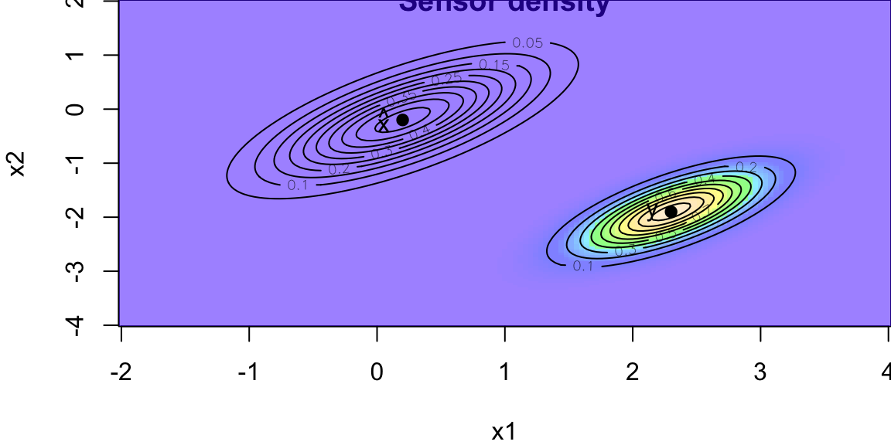
Now we combine our initial guess about the location \(x_0\) with the measure noisy location data \(y_0\) to obtain posterior distribution of the location of the robot \(p(x\mid \hat x_0, \Sigma,R) = N(x\mid \hat x_f, \Sigma_f)\) \[ \begin{aligned} \hat{x}_f & = (\Sigma^{-1} + R^{-1})^{-1} (\Sigma^{-1} \hat{x} + R^{-1} y) \\ \Sigma_f & = (\Sigma^{-1} + R^{-1})^{-1} \end{aligned} \] Using the matrix inversion identity \[ \begin{aligned} (A^{-1} + B^{-1})^{-1} & = A - A (A + B)^{-1}A = A (A + B)^{-1} B \end{aligned} \] I can write the above as: \[ \begin{aligned} \hat{x}_f & = (\Sigma - \Sigma (\Sigma + R)^{-1}\Sigma)(\Sigma^{-1} \hat{x} + R^{-1}y)\\ & =\hat{x} - \Sigma (\Sigma + R)^{-1} \hat{x} + \Sigma R^{-1} y -\Sigma (\Sigma + R)^{-1}\Sigma R^{-1}y\\ & = \hat{x} + \Sigma (\Sigma + R)^{-1} (y - \hat{x})\\ & = (1.667, -1.333)\\ \Sigma_f &= \Sigma - \Sigma (\Sigma + R)^{-1} \Sigma\\ &=\left[\begin{array}{lll} 0.133 & 0.10\\ 0.100 & 0.15 \end{array} \right] \end{aligned} \] In the more general case when \(G\) is not the identity matrix I have \[ \begin{aligned} \hat{x}_f & = \hat{x} + \Sigma G^T (G \Sigma G^T + R)^{-1} (y - G \hat{x})\\ \Sigma_f &= \Sigma - \Sigma G^T (G \Sigma G^T + R)^{-1} G \Sigma \end{aligned} \]
G <- diag(2)
y <- c(2.4, -1.9)
xhatf <- xhat + Sigma %*% t(G) %*% solve(G %*% Sigma %*% t(G) + R) %*% (y - G %*% xhat)
Sigmaf <- Sigma - Sigma %*% t(G) %*% solve(G %*% Sigma %*% t(G) + R) %*% G %*% Sigma
z3 <- outer(x1, x2, f, mean=c(xhatf), varcov=Sigmaf)
image(x1, x2, z3, col=mycols,
xlab=expression('x'[1]), ylab=expression('x'[2]),
main="Filtered density")
contour(x1, x2, z3, add=TRUE)
points(xhatf[1], xhatf[2], pch=19)
text(xhatf[1]-0.1, xhatf[2],
labels = expression(hat(x)[f]), adj = 1)
lb <- adjustcolor("black", alpha=0.5)
contour(x1, x2, z, add=TRUE, col=lb)
points(0.2, -0.2, pch=19, col=lb)
text(0.1, -0.2, labels = expression(hat(x)), adj = 1, col=lb)
contour(x1, x2, z2, add=TRUE, col=lb)
points(2.3, -1.9, pch=19, col=lb)
text(2.2, -1.9,labels = "y", adj = 1, col=lb)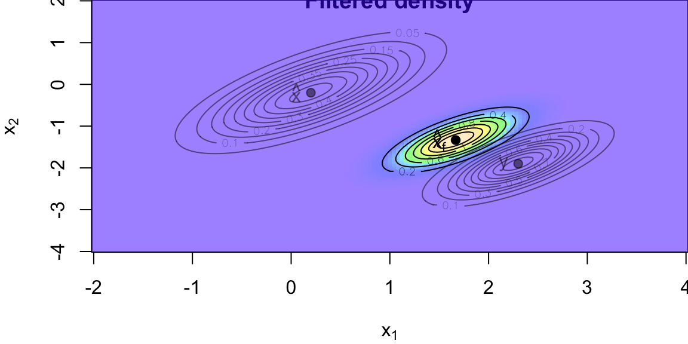
Now I assume my robot moves according to the following model \[ x_t = A x_{t-1} + w_t, \quad w_t \sim N(0, Q) \] with \[ \begin{split} A = \left( \begin{array}{cc} 1.2 & 0.0 \\ 0.0 & -0.2 \end{array} \right), \qquad Q = 0.3 \Sigma \end{split} \] Then the next location is normally distributed with the parameters \[ \begin{split} A= \left(\begin{array}{cc} 1.2 & 0.0 \\ 0.0 & -0.2 \end{array}\right), \qquad Q = 0.3 \Sigma \end{split} \] Here \(K = A \Sigma G^T (G \Sigma G^T + R)^{-1}\) is so-called Kalman gain matrix.
A <- matrix(c(1.2, 0,
0, -0.2), ncol=2)
Q <- 0.3 * Sigma
K <- A %*% Sigma %*% t(G) %*% solve(G%*% Sigma %*% t(G) + R)
xhatnew <- A %*% xhat + K %*% (y - G %*% xhat)
Sigmanew <- A %*% Sigma %*% t(A) - K %*% G %*% Sigma %*% t(A) + Q
z4 <- outer(x1,x2, f, mean=c(xhatnew), varcov=Sigmanew)
image(x1, x2, z4, col=mycols,
xlab=expression('x'[1]), ylab=expression('x'[2]),
main="Predictive density")
contour(x1, x2, z4, add=TRUE)
points(xhatnew[1], xhatnew[2], pch=19)
text(xhatnew[1]-0.1, xhatnew[2],
labels = expression(hat(x)[new]), adj = 1)
contour(x1, x2, z3, add=TRUE, col=lb)
points(xhatf[1], xhatf[2], pch=19, col=lb)
text(xhatf[1]-0.1, xhatf[2], col=lb,
labels = expression(hat(x)[f]), adj = 1)
contour(x1, x2, z, add=TRUE, col=lb)
points(0.2, -0.2, pch=19, col=lb)
text(0.1, -0.2, labels = expression(hat(x)), adj = 1, col=lb)
contour(x1, x2, z2, add=TRUE, col=lb)
points(2.3, -1.9, pch=19, col=lb)
text(2.2, -1.9,labels = "y", adj = 1, col=lb)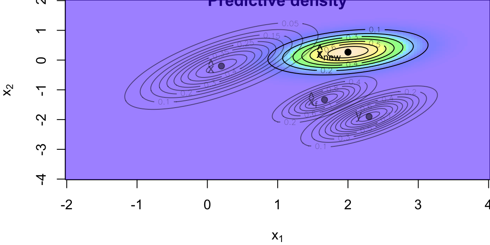
Forward filtering and Backwards Sampling
The Kalman filtering recursions lead to a fully recursive algorithm for characterizing \(p( x| y)\) known as FFBS (Forward filtering and Backwards Sampling). This provides the counterpart to the Baum-Welch algorithm developed earlier for HMMs. The details are as follows. The first step is to factorize the joint posterior distribution of the states via \[\begin{align*} p\left( x|y^{T}\right) & =p\left( x_{T}|y^{T}\right) \prod_{t=1}% ^{T-1}p\left( x_{t}|x_{t+1},...,x_{T},y^{T}\right) \\ & =p\left( x_{T}|y^{T}\right) \prod_{t=1}^{T-1}p\left( x_{t}|x_{t+1}% ,y^{t}\right) \label{ffbs-1} \end{align*}\] where we have used the fact that \(p\left( x_{t}|x_{t+1},...,x_{T},y^{T}\right) =p\left( x_{t}|x_{t+1},y^{T}\right)\) by the Markov property (conditional on \(x_{t+1}\), \(x_{t}\) is independent of all \(x_{t+2}\), etc.).
This forms the FFBS algorithm: forward-filtering, backward sampling algorithm for generating a block sample from \(p\left( x|y^{T}\right)\). Filter forward using the Kalman recursions and obtain a sample from \(p( x_T|y^T)\) and then backwards sample using \(p\left(x_{t}|x_{t+1},y^{t}\right)\) to generate a block draw of \(x\). In what follows, we will often write \[ p\left( x|y^{T}\right) \sim FFBS \] to denote that the FFBS algorithm can be used to generate a block draw.
Backwards Sampling.
The distribution of the final state given the data history \(p( x_{T} | y^{T} )\) is given by the Kalman filter \[ p( x_{T}|y^{T}) \sim\mathcal{N}\left( \mu_{T},\Sigma_{T}\right) \] where \(( \mu_{T} , \Sigma_{T} )\) are computed via the Kalman filter recursions. The second distribution comes from the factorization of \(p( x_{t}, x_{t+1} | y^{t} )\) in the derivation of the Kalman filtering recursions. Hence, the conditional state filtering distribution given \(( x_{t+1} , y^t )\) is \[ p( x_{t} | x_{t+1} , y^{t} ) \sim\mathcal{N}\left( \mu_{t|t+1} , \Sigma_{t|t+1} \right) \] where the one-step back smoothed moments are \[\begin{align*} \mu_{t|t+1} & = \Sigma_{t|t+1} \left( \Sigma_{t|t} \mu_{t|t} + F_{t+1}^T\left( \Sigma^{x}_{t+1} \right) ^{-1} x_{t+1} \right) \\ \Sigma_{t|t+1} & = F_{t+1}^T\left( \Sigma^{x}_{t+1} \right) ^{-1} F_{t+1} + \Sigma_{t|t}^{-1}% \end{align*}\] as computed above. Then we can sequentially sample from this distribution.
We can also introduce a \(\lambda_t\) state variable and consider a system
\[ \begin{aligned} y_t & = F_{\lambda_t} x_t + D_{\lambda_t} \epsilon_t \\ x_t & = G_{\lambda_t} x_{t-1} + B_{\lambda_t} v_t \end{aligned} \]
The Kalman filter gives moments of the state filtering distribution
\[ x_t | \lambda^t , y^t \sim \mathcal{N} \left ( \mu_{t|t} , \Sigma_{t|t} \right ) \]
Here we assume that the iid auxiliary state variable shocks \(\lambda_t \sim p( \lambda_t )\).
First we marginalize over the state variable \(x_t\). Then we can track the sufficient statistics for the hidden \(z_t\) variable dynamically in time, namely \(\left ( z_{t|t} , S_t \right )\), just the Kalman filter moments, in the conditionally Gaussian and discrete cases Lindgren (1978). Then we re-sample \(( z_{t|t} , S_t , \theta )^{(i)}\) particles.
The general form of a continuous-time regime switching model is
\[ dy_{t}=\mu\left( \theta,x_{t},y_{t}\right) dt+\sigma\left( \theta ,x_{t},y_{t}\right) d B_{t}% \]
where \(x_{t}\) takes values in a discrete space with transition matrix \(P_{ij}\left( t\right)\) with parameters \(\theta=\left( \theta_{1},\ldots,\theta_{J}\right)\). Common specifications assume the drift and diffusion coefficients are parametric functions and the parameters switch over time. In this case, it is common to write the model as
\[ dy_{t}=\mu\left( \theta_{x_{t}},y_{t}\right) dt+\sigma\left( \theta_{x_{t}% },y_{t}\right) d B_{t}\text{.}% \]
Scott (2002) provides a fast MCMC algorithm for state filtering by adapting the FFBS algorithm. Time discretized the model is:
\[ y_{t}=\mu\left( \theta_{x_{t}},y_{t-1}\right) +\sigma\left( \theta_{x_{t}% },y_{t-1}\right) \varepsilon_{t}\text{.}% \]
Note that we use the standard notation from discrete-time models where the time index on the Markov state is equal to the current observation. The discrete-time transition probabilities are
\[ p_{ij}=P\left( x_{t}=i|x_{t-1}=j\right) \]
and we assume, apriori, that the transition functions are time and state invariant. The joint likelihood is given by
\[ p\left( y| x,\theta\right) = \prod_{t=1}^{T} p\left( y_{t}|y_{t-1}% ,x_{t-1},\theta\right)\]
where \(p\left( y_{t}|y_{t-1},x_{t-1},\theta\right) =N\left( \mu\left( \theta_{x_{t-1}},y_{t-1}\right) ,\sigma^{2}\left( \theta_{x_{t-1}}% ,y_{t-1}\right) \right)\).
Clifford-Hammersley implies that the complete conditionals are given by \(p\left( \theta| x ,s , y \right)\), \(p\left( s | x , \theta, y \right)\), and \(p\left( x | s ,\theta, y \right)\). Conditional on the states and the transition probabilities, updating the parameters is straightforward. Conditional on the states, the transition matrix has a Dirchlet distribution, and updating this is also straightforward. To update the states use FFBS.
An important component of regime switching models is the prior distribution. Regime switching models (and most mixture models) are not formally identified. For example, in all regime switching models, there is a labeling problem: there is no unique way to identify the states. A common approach to overcome this identification issue is to order the parameters.
Smith (1975) introduced the single changepoint problem from a Bayesian perspective. Consider a sequence of random variables \(y_{1} , \ldots, y_{T}\) which has a change-point at time \(\tau\) in the sense that
\[ y_t | \theta_{k} \sim \left\{ \begin{array}[c]{l} p( y | \theta_{1} ) \; \; \; \; \; \; \mathrm{for} \; \; 1 \leq i \leq\tau \\ p( y | \theta_{2} ) \; \; \; \; \; \; \mathrm{for} \; \; \tau+1 \leq i \leq T \end{array} \right\}\]
This can be rewritten as a state space model
\[ y_t = \theta_{ x_t } + \sigma_{ x_t } \epsilon_t \]
where \(x_t\) has a Markov transition evolution.
An idea that appears to be under-exploited is that of “model reparametrisation”. The multiple change-point problem, which is computationally expensive if approached directly, has a natural model reparametrisation that makes the implementation of MCMC methods straightforward (see Chib (1998)). Specifically, suppose that the data generating process \(y^{T} = \{ y_{1} , \ldots, y_{T} \}\) is given by a sequence of conditionals \(f ( y_{t} | y^{t-1} , \theta_{k} )\) for parameters \(\theta_{k}\) that change at unknown change-points \(\{ \tau_{1} , \ldots, \tau_{k} \}\).
The model parameterization is based on using a hidden Markov state space model with a vector of latent variables \(s_{t}\) where \(s_{t} = k\) indicates that \(y_{t}\) is drawn from \(p ( y_{t} | y^{t-1} , \theta_{k} )\). Let the prior distribution on the \(s_{t}\)’s have transition matrix where \(p_{ij} = P \left( s_{t} = j | s_{t-1} = i \right)\) is the probability of jumping regimes. With this model parameterization the \(k\)th change occurs at \(\tau_{k}\) if \(s_{ \tau_{k} } = k\) and \(s_{ \tau_{k} + 1 } = k + 1\). The reparameterisation automatically enforces the order constraints on the change-points and is it very easy to perform MCMC analysis on the posterior distribution. This provides a more efficient strategy for posterior computation. MCMC analysis of the \(s_{t}\)’s is straightforward and the posterior for the \(\tau_{k}\)’s can be obtained by inverting the definition above. Hence
\[ p( \tau = t | y ) = p( x_t =1 | y ) \]
The alternative is single state updating conditional on \(\tau\) which is slow for finding the multiple-changeponts.
Particle learning (PL) offers a powerful and flexible approach for sequential inference in general mixture models. Unlike traditional MCMC methods, which require repeated passes over the entire dataset and can be computationally demanding, particle learning operates in an online fashion. This means it can efficiently update inference as new data arrives, making it particularly well-suited for large or high-dimensional datasets and real-time applications.
The particle learning framework is designed to efficiently and sequentially learn from a broad class of mixture models. At its core, the approach models data as arising from a mixture distribution:
\[ f(z) = \int k(z;\theta) d G(\theta) \]
where \(G\) is a discrete mixing measure and \(k(z;\theta)\) is a kernel parameterized by \(\theta\). The generality of this formulation allows PL to be applied to a wide variety of models, including finite mixture models, Dirichlet process mixtures, Indian buffet processes, and probit stick-breaking models. This flexibility is a significant advantage, as it enables practitioners to use PL across many settings without needing to redesign the inference algorithm for each new model structure.
In addition to its generality, particle learning provides an alternative to MCMC for tasks such as online model fitting, marginal likelihood estimation, and posterior cluster allocation. Its sequential nature makes it particularly attractive for streaming data and scenarios where computational resources are limited.
A general mixture model can be described by three components: a likelihood, a transition equation for latent allocations, and a prior over parameters. Specifically,
This structure can be expressed in a state-space form:
\[\begin{align} y_{t+1} &= f(k_{t+1}, \theta) \\ k_{t+1} &= g(k^t, \theta) \end{align}\]
where the first equation is the observation model and the second describes the evolution of the latent allocation states.
The mixture modeling framework described above is closely related to hidden Markov models (HMMs). In this context, the observed data \(y_t\) are assumed to be generated from a mixture, with allocation variables \(k_t\) determining which mixture component is responsible for each observation. The parameters \(\theta_{k_t}\) for each component are drawn from the mixing measure \(G\). This structure allows for both standard mixture models, where each observation is assigned to a single component, and more general latent feature models, where multivariate allocation variables \(k_t\) allow an observation to be associated with multiple components simultaneously.
A central concept in particle learning is the essential state vector \(\mathcal{Z}_t\), which is tracked over time. This vector is constructed to be sufficient for sequential inference, meaning that it contains all the information needed to compute the posterior predictive distribution for new data, update the state as new observations arrive, and learn about the underlying parameters:
Particle learning approximates the posterior distribution \(p(\mathcal{Z}_t | y^t)\) with a set of equally weighted particles \(\{\mathcal{Z}_t^{(i)}\}_{i=1}^N\). When a new observation \(y_{t+1}\) becomes available, the algorithm proceeds in two main steps:
This two-step process is grounded in Bayes’ theorem, where the resampling step corresponds to updating the posterior with the new data, and the propagation step advances the state according to the model dynamics. After these steps, the set of particles provides an updated approximation to the posterior \(p(\mathcal{Z}_{t+1} | y^{t+1})\).
One important distinction between particle learning and standard particle filtering methods is that the essential state vector \(\mathcal{Z}_t\) does not necessarily need to include the full history of allocation variables \(k^t\) to be sufficient for inference. This makes PL both more efficient and more flexible than many existing particle filtering approaches for mixture models. Furthermore, the order of resampling and propagation steps is reversed compared to standard filters, which helps mitigate particle degeneracy and improves performance in mixture modeling contexts.
Particle learning also provides an efficient mechanism for sampling from the full posterior distribution of the allocation vector \(p(k^t | y^t)\). This is achieved using a backwards uncertainty update, which allows for the recovery of smoothed samples of the allocation history. For each particle, and for each time step in reverse order, the allocation variable \(k_r\) is sampled with probability proportional to the product of the likelihood and the prior for that allocation, given the state vector. This results in an algorithm with computational complexity linear in the number of particles, making it practical even for large datasets.
The particle learning framework is applicable to a wide range of density estimation problems involving mixtures of the form
\[ f(y;G) = \int k(y ; \theta) dG(\theta) \]
There are many possible choices for the prior on the mixing measure \(G\). Common examples include finite mixture models, which use a finite number of components; Dirichlet process mixtures, which allow for an infinite number of components via a stick-breaking construction; beta two-parameter processes; and kernel stick-breaking processes. Each of these priors offers different modeling flexibility and computational properties, and the choice depends on the specific application and desired level of model complexity.
In some cases, it is useful to consider a collapsed state-space model, where the predictive distribution for a new observation is expressed as an expectation over the mixing measure \(G\) given the current state vector:
\[ \mathbb{E}[f(y_{t+1};G) | \mathcal{Z}_t] = \int k(y_{t+1};\theta) d \mathbb{E}[G(\theta) | \mathcal{Z}_t] \]
If \(t\) observations have been allocated to \(m_t\) mixture components, the posterior expectation of \(G\) can be written as a weighted sum of the base measure and point masses at the component parameters. The predictive density then combines contributions from both new and existing components, weighted according to their posterior probabilities.
Particle learning offers a versatile and efficient framework for sequential inference in general mixture models. By representing the posterior with a set of particles and updating these particles as new data arrives, PL enables real-time model fitting, efficient posterior allocation, and flexible density estimation across a wide range of mixture modeling scenarios. Its ability to handle both finite and infinite mixture models, as well as latent feature models, makes it a valuable tool for modern statistical analysis.
Example 15.5 (Particle Learning for Poisson Mixture Models) We will implement Particle Learning (PL) for a finite mixture of Poisson distributions based on the example from Carvalho et al. (2010). This example follows Algorithm 1 for finite mixture models from Section 2.1 of the paper.
We generate data from a mixture of two Poisson distributions (\(\lambda_1=2\) with weight 0.7, \(\lambda_2\)=10 with weight 0.3).
set.seed(8) # Ovi
# Simulate data (500 observations)
n_obs <- 500
true_z <- sample(1:2, n_obs, replace=TRUE, prob=c(0.7, 0.3))
y <- ifelse(true_z == 1, rpois(n_obs, 2), rpois(n_obs, 10))# Plot two empirical density plots for each mixture component. Put them in one plot
plot(density(y[true_z == 1]), xlab = "y", col = "blue", lwd = 2, xlim = c(0, 15), ylim = c(0, 0.3), main="")
lines(density(y[true_z == 2]), col = "red", lwd = 2)
lines(density(y),xlab = "y", col = "purple", lwd = 2, xlim = c(0, 15), ylim = c(0, 0.3))
legend("topright", legend=c("Component 1 (Lambda=2)", "Component 2 (Lambda=10)", "Mixture Density"), col=c("blue", "red", "purple"), lwd=2)
The code below implements the Particle Learning algorithm using the following steps: 1 Particle Initialization: - Each particle tracks sufficient statistics: - s: Sum of observations per component - n: Count of observations per component 2. PL Algorithm: - Resample: Particles are weighted by the posterior predictive probability of the next observation - Propagate: For each particle: - Compute component allocation probabilities - Sample component assignment - Update sufficient statistics - Learn: Store posterior estimates of \(\lambda\) parameters and mixture weights
The key features of this implementation are the use of posterior predictive with Poisson-Gamma conjugacy and allocation of probabilities by combining prior weights and likelihood.
# Model parameters
m <- 2 # Number of components
alpha <- c(1, 1) # Gamma prior shape parameters
beta <- c(1, 1) # Gamma prior rate parameters
gamma <- c(1, 1) # Dirichlet prior parameters
n_particles <- 1000 # Number of particles
# Initialize particles
particles <- lapply(1:n_particles, function(i) {
list(s = c(0, 0), # Sufficient statistics (sum of y in each component)
n = c(0, 0)) # Counts per component
})
# Store posterior samples
posterior_lambda <- matrix(0, nrow = n_obs, ncol = m)
posterior_weights <- matrix(0, nrow = n_obs, ncol = m)
# Particle Learning algorithm
for (t in 1:n_obs) {
y_t <- y[t]
log_weights <- numeric(n_particles)
# 1. Compute weights using posterior predictive
for (i in 1:n_particles) {
total_obs <- sum(particles[[i]]$n)
weight_components <- (particles[[i]]$n + gamma) / (total_obs + sum(gamma))
# Predictive for each component (Poisson-Gamma)
pred_prob <- sapply(1:m, function(j) {
shape_post <- alpha[j] + particles[[i]]$s[j]
rate_post <- beta[j] + particles[[i]]$n[j]
exp(dpois(y_t, shape_post/rate_post, log = TRUE) +
dgamma(shape_post/rate_post, shape_post, rate_post, log = TRUE))
})
log_weights[i] <- log(sum(weight_components * pred_prob))
}
# Normalize weights
max_logw <- max(log_weights)
weights <- exp(log_weights - max_logw)
weights <- weights / sum(weights)
# 2. Resample particles
idx <- sample(1:n_particles, size = n_particles, replace = TRUE, prob = weights)
particles <- particles[idx]
# 3. Propagate state
for (i in 1:n_particles) {
# Compute allocation probabilities
alloc_probs <- sapply(1:m, function(j) {
shape_post <- alpha[j] + particles[[i]]$s[j]
rate_post <- beta[j] + particles[[i]]$n[j]
log_prior <- log(particles[[i]]$n[j] + gamma[j]) - log(sum(particles[[i]]$n) + sum(gamma))
log_lik <- dpois(y_t, shape_post/rate_post, log = TRUE)
exp(log_prior + log_lik)
})
alloc_probs <- alloc_probs / sum(alloc_probs)
# Sample component allocation
k <- sample(1:m, size = 1, prob = alloc_probs)
# Update sufficient statistics
particles[[i]]$s[k] <- particles[[i]]$s[k] + y_t
particles[[i]]$n[k] <- particles[[i]]$n[k] + 1
}
# 4. Learn parameters (store posterior means)
lambda_samples <- t(sapply(particles, function(p) {
(alpha + p$s) / (beta + p$n)
}))
weight_samples <- t(sapply(particles, function(p) {
(gamma + p$n) / sum(gamma + p$n)
}))
posterior_lambda[t,] <- colMeans(lambda_samples)
posterior_weights[t,] <- colMeans(weight_samples)
}Now we are ready to plot the results
library(ggplot2)
# Convert posterior estimates to data frames for ggplot
posterior_df <- data.frame(
Observation = 1:n_obs,
Lambda1 = posterior_lambda[, 1],
Lambda2 = posterior_lambda[, 2],
Weight1 = posterior_weights[, 1],
Weight2 = posterior_weights[, 2]
)
# Plot Lambda parameters
ggplot(posterior_df, aes(x = Observation)) +
geom_line(aes(y = Lambda1, color = "Lambda1"), size = 1) +
geom_line(aes(y = Lambda2, color = "Lambda2"), size = 1) +
geom_hline(yintercept = 2, linetype = "dashed", color = "blue") +
geom_hline(yintercept = 10, linetype = "dashed", color = "red") +
labs(title = "Posterior Estimates: Lambda Parameters",
x = "Observation", y = "Lambda") +
scale_color_manual(values = c("black", "red")) +
theme_minimal() +
theme(legend.title = element_blank())
# Plot Weights
ggplot(posterior_df, aes(x = Observation)) +
geom_line(aes(y = Weight1, color = "Weight1"), size = 1) +
geom_line(aes(y = Weight2, color = "Weight2"), size = 1) +
geom_hline(yintercept = 0.7, linetype = "dashed", color = "blue") +
geom_hline(yintercept = 0.3, linetype = "dashed", color = "red") +
labs(title = "Posterior Estimates: Mixture Weights",
x = "Observation", y = "Weight") +
scale_color_manual(values = c("black", "red")) +
theme_minimal() +
theme(legend.title = element_blank())The first plot shows the posterior estimates of \(\lambda\) parameters converging to true values (2 and 10). The second plot shows mixture weights converging to true weights (0.7 and 0.3). Convergence typically occurs after 100-200 observations. Particle degeneracy is mitigated through systematic resampling
Advantages of PL for Mixtures:
This implementation demonstrates PL’s ability to handle finite mixtures, but the same framework extends to infinite mixtures (DP mixtures) and other general mixture models described in the paper by modifying the propagation and resampling steps.
A recent post by the Amazon Science group Amazon (2021) describes the evolution of the time series algorithms used for forecasting from 2007 to 2021. Figure below shows the entire evolution of the algorithms.
They went from standard textbook time series forecasting methods to make predictions to the quantile-based transformer models. The main problem of the traditional TS models is that they assume stationary. A stationary time series is one whose properties do not depend on the time at which the series is observed. For example, a white noise series is stationary - it does not matter when you observe it, it should look much the same at any point in time.
yt = rnorm(100)
plot(yt,type='l')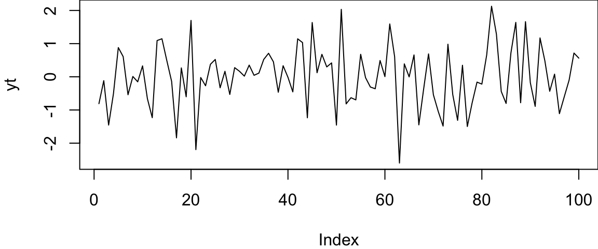
In other words, all the coefficients of a time series model do not change over time. We know how to deal with trends and seasonality quite well. Thus, those types of non-stationary are not an issue. Below some of the example of time series data. Although most of those are not stationary, we can model them using traditional techniques (Hyndman and Athanasopoulos (2021)).
However, when you try to forecast for a time series with no prior history or non-recurrent “jumps”, like recessions, traditional models are unlikely to work well.
Amazon used a sequence of “patches” to hack the model and to make it produce useful results. All of those required manual feature engineering and led to less transparent and fragile models. One solution is to use random forests.
Most estimators during prediction return \(E(Y|X)\), which can be interpreted as the answer to the question, what is the expected value of your output given the input?
Quantile methods, return \(y\) at \(q\) for which \(F(Y=y|X)=q\) where \(q\) is the percentile and \(y\) is the quantile. One quick use-case where this is useful is when there are a number of outliers which can influence the conditional mean. It is sometimes important to obtain estimates at different percentiles, (when grading on a curve is done for instance.)
Note, Bayesian models return the entire distribution of \(P(Y|X)\).
It is fairly straightforward to extend a standard decision tree to provide predictions at percentiles. When a decision tree is fit, the trick is to store not only the sufficient statistics of the target at the leaf node such as the mean and variance but also all the target values in the leaf node. At prediction, these are used to compute empirical quantile estimates.
The same approach can be extended to Random Forests. To estimate \(F(Y=y|x)=q\) each target value in training \(y\)s is given a weight. Formally, the weight given to \(y_j\) while estimating the quantile is \[ \frac{1}{T} \sum_{t=1}^{T} \frac{\mathbb{1}(y_j \in L(x))}{\sum_{i=1}^N \mathbb{1}(y_i \in L(x))}, \] where \(L(x)\) denotes the leaf that \(x\) falls into.
Informally, what it means that for a new unknown sample, we first find the leaf that it falls into at each tree. Then for each \((X, y)\) in the training data, a weight is given to \(y\) at each tree in the following manner.
These weights for each y are summed up across all trees and averaged. Now since we have an array of target values and an array of weights corresponding to these target values, we can use this to measure empirical quantile estimates.
Motivated by the success of gradient boosting models for predicting Walmart sales (kaggle (2020)), Januschowski et al. (2022) tries to explain why tree-based methods were so widely used for forecasting.